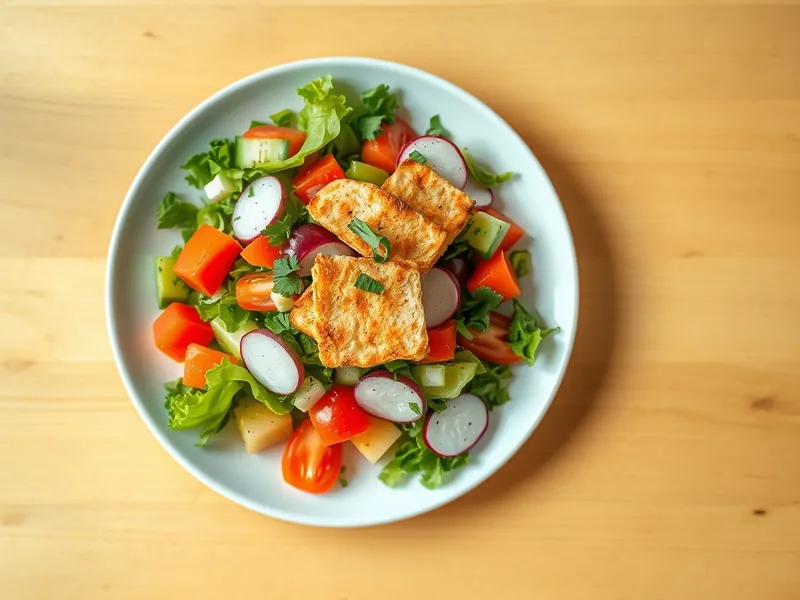

Фаттуш - ливанский салат с хрустящей лепёшкой
Свежие овощи и зелень с лимонной заправкой и хрустящими кусочками подсушенного лаваша
20 мин4 порц.206 ккал на порциюБ 5 · Ж 12 · У 20Средиземноморская кухня
Открыть в приложении: порции, таймеры, список покупок
Продукты на 4 порц.
- Лаваш тонкий1 шт
- Салат листовой150 г
- Помидоры2 шт
- Огурцы2 шт
- Редис5 шт
- Зелёный лук30 г
- Петрушка1 пучок
- Лимон0,5 шт
- Оливковое масло3 ст. л.
- Чеснок1 зуб.
- Сольпо вкусу
Как готовить
- Разорвите лаваш на кусочки размером 3-4 см, сбрызните 1 ст. л. масла и подсушите в духовке при 180 °C (средний жар) 5-7 минут до золотистого цвета и хруста.
- Листья салата порвите руками, помидоры нарежьте дольками, огурцы и редис полукружьями, зелёный лук и петрушку крупно порубите.
- Для заправки смешайте сок половины лимона, оставшееся масло, выдавленный чеснок и соль.
- Сложите овощи и зелень в миску, полейте заправкой и перемешайте.
- Добавьте хрустящий лаваш прямо перед подачей и ещё раз аккуратно перемешайте.
Совет. Лаваш кладите в последний момент, чтобы он не размок. Если есть сумах, посыпьте им салат: он даёт фирменную кислинку.